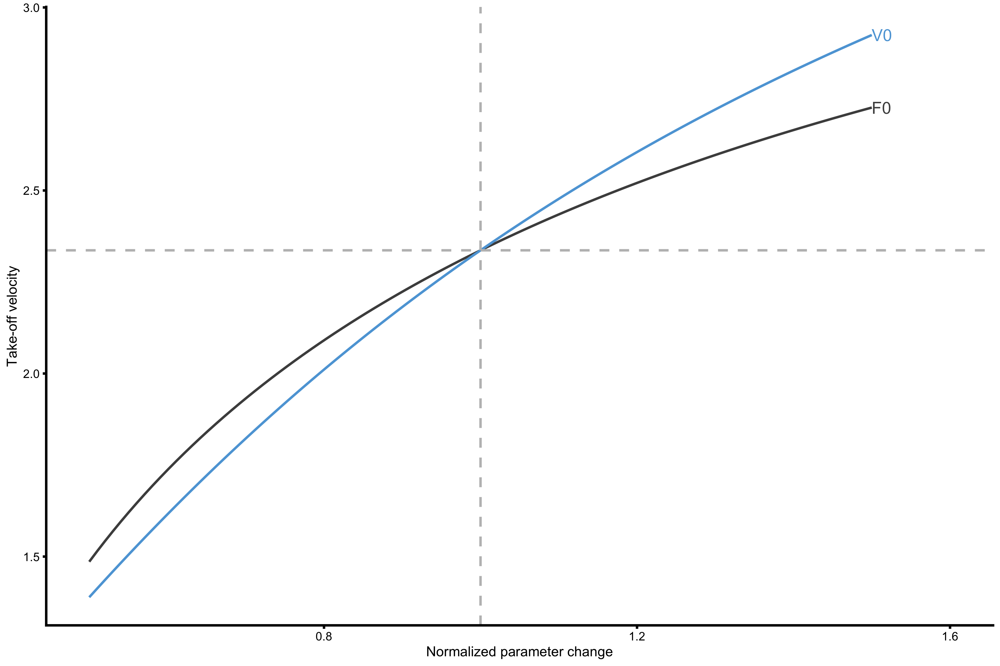

Introduction to Samozino et al. method
# Install vjsim if you haven't already by running the following commands
# install.packages("devtools")
# devtools::install_github("mladenjovanovic/vjsim")
# Install tidyverse and cowplot packages
# install.packages(c("tidyverse", "cowplot", "DT), dependencies = TRUE)
library(vjsim)
library(tidyverse)
library(cowplot)
library(DT)Before reading this vignette, please read Introduction to vjsim, Simulation in vjsim and Profiling in vjsim vignettes by running:
This vignette is influenced with the works of Samozino, JB Morin et al. (Samozino et al. 2008, 2010, 2012, 2013; Pierre Samozino 2018b, 2018a, 2018a) and Jimenez-Reyes et al. (Jiménez-Reyes et al. 2017; Jiménez-Reyes, Samozino, and Morin 2019). I will provide a short summary and implementation in vjsim as well as some of my opinions regarding Samozino optimization model, but you are urged to check the references for more thorough information.
In the previous vignette Profiling in vjsim I demonstrated the ideas behind Force-Velocity (FV) and Load-Velocity (LV) profiling and their implementation in vjsim, as well as the issues with those methods. This is relatively easy, since we are using simulated data. But collecting data on real athletes is harder, and Samozino et al. (2008) and Samozino et al. (2010) created a simple method for estimating mean force and mean velocity from load~jump height profiling. To demonstrate how this works, and what are the assumptions of this model, I will used the profile from the previous vignette:
# External load in kilograms
external_load <- c(0, 20, 40, 60, 80, 100)
profile_data <- vjsim::vj_profile(
external_load = external_load,
# Simulation parameters
mass = 75,
push_off_distance = 0.4,
max_force = 3000,
max_velocity = 4
# Other parameters are default in the `vjsim::fgen_get_output`
# weight = mass * gravity_const,
# gravity_const = 9.81,
# decline_rate = 1.05,
# peak_location = -push_off_distance * 0.15,
# time_to_max_activation = 0.3
)As illustrated in the previous vignette, with vjsim we can create various FV profiles. But Samozino et al. (2008) and Samozino et al. (2010) suggested a simple field method that can approximate mean force (\(\bar{F}\)) and mean velocity (\(\bar{v}\)) from a known (1) bodyweight, (2) jump height and (3) push-off distance. Otherwise, more expensive equipment, such as force place, is needed. The goal is to approximate laboratory Force-Velocity profiling using field Load-Height profile.
To represent jump, we will use introduced model in vjsim, where we have object of mass \(m\), that is acelerated over push-off distance (or height) \(h_{po}\) by the action of the Force Generator, eventually reaching jump height \(h\). The jump is performed vertically, on Earth, where the gravity constant \(g\) is equal to \(9.81ms^-2\). At the end of the push-off distance, object reaches the take-off velocity (\(TOV\), or \(v_{to}\)), from which we can calculate height reached. Actualy, in this field method, we calculate TOV from jump height reached using the inverse ballistic equation:
\[ v_{to} = \sqrt{2gh} \]
For the object to reach jump height, Force Generator must do some work. Using the work (or energy) equation, we can derive mean force \(\bar{F}\). Please note that this mean force is mean over distance (see Introduction to vjsim). Work done by the Force Generator is equal to weight of the object (i.e. \(mg\)), multiplied by total distance, or sum of push-off distance and height reached (i.e. \(h_{po}+h\)):
\[ W = mg(h_{po}+h) \]
The above equation uses potential energy. We can also use potential plus kinetic energy form, where we sum the potential energy acquired by lifting the object for \(h_{po}\) and kinetic energy using \(v_{to}\). These two equations are identical (actually this is how ballistic equation to get height from \(v_{to}\) and vice versa is derived in the first place).
\[ W = mgh + \frac{mv_{to}^2}{2} \]
Since work is equal \(F \times d\), and Force Generator acts only over the \(h_{po}\), we get the following equation for mean force \(\bar{F}\):
\[ \begin{aligned} W &= \bar{F}\times h_{po} \\ \bar{F} &= \frac{W}{h_{po}} \\ \bar{F} &= \frac{mg(h_{po}+h)}{h_{po}} \\ \bar{F} &= mg(\frac{h}{h_{po}}+1) \end{aligned} \]
Now we have the mean force acting over \(h_{po}\). But, how do we get the mean velocity \(\bar{v}\) over \(h_{po}\) (which is needed for FV profiling)?
The mean velocity over \(h_{po}\) is equal to \(h_{po}\) divided by the time it takes to cover it, or \(t_{po}\):
\[ \bar{v} = \frac{h_{po}}{t_{po}} \]
Unfortunatelly, we do not know \(t_{po}\) (using this simple field approach). What Samozino et al. (2008) and Samozino et al. (2010) have done (see Samozino et al. (2008) page 2941, equation 6) is to use impulse-momentum equation, which states that impulse (\(I = (\bar{F} - mg) \times t_{po}\)) is equal to the momentum (\(M = m \times v_{to}\)). We thus get the following equation, from which we can extract \(t_{po}\):
\[ \begin{aligned} I &= M \\ (\bar{F} - mg) \times t_{po} &= m \times v_{to} \\ t_{po} &= \frac{m \times v_{to}}{\bar{F} - mg} \end{aligned} \]
If we use the equation that \(v_{to} = \sqrt{2gh}\), we get the following equation for \(\bar{v}\):
\[ \begin{aligned} \bar{v} &= \frac{h_{po}}{t_{po}} \\ \bar{v} &= \frac{h_{po}}{\frac{m \times v_{to}}{\bar{F} - mg}} \\ \bar{v} &= \frac{h_{po}}{\frac{m \times v_{to}}{mg(\frac{h}{h_{po}}+1) - mg}} \\ \bar{v} &= \frac{h_{po}}{\frac{m \times v_{to}}{\frac{mgh}{h_{po}}}} \\ \bar{v} &= \frac{gh}{v_{to}} \\ \end{aligned} \]
We can now use \(v_{to} = \sqrt{2gh}\) to solve this equation:
\[ \begin{aligned} \bar{v} &= \frac{gh}{v_{to}} \\ \bar{v} &= \frac{gh}{\sqrt{2gh}} \\ \bar{v} &= \sqrt{\frac{gh}{2}} \end{aligned} \]
This also implies that \(\frac{v_{to}}{\bar{v}}\) is equal to:
\[ \begin{aligned} \frac{v_{to}}{\bar{v}} &= \\ \frac{\sqrt{2gh}}{\sqrt{\frac{gh}{2}}} &= \\ &= 2 \end{aligned} \]
Why is this? Because, equations used by Samozino et al. (2008) and Samozino et al. (2010) assumes same \(\bar{F}\) over distance (estimated using Work/Energy equations) and \(\bar{F}\) over time (estimated using Impulse - Momentum equations). This assumption is only valid when there is constant force applied and there is uniform acceleration. In that case (assuming starting velocity to be equal to 0 m/s), \(v_{to}\) is twice as big as \(\bar{v}\).
In short, field method proposed by Samozino et al. (2008) and Samozino et al. (2010) approximates \(\bar{F}\) and \(\bar{v}\) assuming constant force and is uniform acceleration across \(h_{po}\). Although wrong, the error introduced by this assumption is estimated in the aforementioned studies when compared with laboratory measurement and it doesn’t seem to be practically significant. But this error (or assumption) simplifies the estimation of \(\bar{F}\) and \(\bar{v}\) in the field settings.
In vjsim this method of profiling is implemented using true \(\bar{v}\) and mean GRF over distance (\(\bar{F}\)), which I called theoretical (and thus represent Mean Force ~ Mean Velocity profile) and using \(\frac{1}{2}v_{to}\) as \(\bar{v}\), which I called practical. We will explore their similarities and differences in this and the next vignette. Here is how these are calculated in vjsim (forcus on \(F_0\) and \(V_0\) and disregard optimal metrics for now - they will soon be explained):
samozino_profiles <- vjsim::get_all_samozino_profiles(profile_data)
datatable(samozino_profiles$data_frame, rownames = FALSE) %>%
formatRound(columns = 1:ncol(samozino_profiles$data_frame), digits = 2)Here is the plot of these two profiles:
plot_data <- data.frame(
profile = rep(c("Theoretical", "Practical"), each = 2),
group = rep(1:2, each = 2),
x = c(samozino_profiles$list$samozino_theoretical_profile$F0, 0, samozino_profiles$list$samozino_practical_profile$F0, 0),
y = c(0, samozino_profiles$list$samozino_theoretical_profile$V0, 0, samozino_profiles$list$samozino_practical_profile$V0)
)
plot_data_points <- rbind(
data.frame(
profile = "Theoretical",
group = 1,
x = profile_data$mean_GRF_over_distance,
y = profile_data$mean_velocity
),
data.frame(
profile = "Practical",
group = 2,
x = profile_data$mean_GRF_over_distance,
y = profile_data$mean_velocity_as_TOV_half
)
)
ggplot(plot_data, aes(x = x, y = y, group = group, color = profile)) +
theme_cowplot(8) +
geom_line(alpha = 0.8) +
geom_point(data = plot_data_points, alpha = 0.8) +
labs(x = "Mean GRF over distance (N)", y = "Mean Velocity (m/s)")
Effect of \(\bar{F}\) on jump height
If mean force \(\bar{F}\) acts on the body of mass \(m\), weight \(w=mg\) over a push-off distance \(h_{po}\), starting with initial velocity \(v=0\), then the final take-off velocity reached \(v_{to}\) is equal to:
\[ \begin{aligned} (\bar{F} - mg)\times h_{po} &= \frac{v_{to}^2}{2} \\ v_{to} &= \sqrt{\frac{2h_{po}(\bar{F} - mg)}{m}} \end{aligned} \]
Assuming athlete weights 75kg, we get the following graph for varying \(h_{po}\) and \(\bar{F}\)
# Need this package to label the lines
# install.packages("directlabels")
require(directlabels)
# Function to calculate TOV
get_tov <- function(mass, gravity_const, mean_force, push_off_distance) {
sqrt((2 * push_off_distance * (mean_force - mass * gravity_const)) / mass)
}
params <- expand_grid(
mass = 75,
gravity_const = 9.81,
push_off_distance = c(0.2, 0.3, 0.4, 0.5, 0.6),
mean_GRF_over_distance = seq(0, 3000)
)
params$take_off_velocity <- get_tov(
mass = params$mass,
gravity_const = params$gravity_const,
mean_force = params$mean_GRF_over_distance,
push_off_distance = params$push_off_distance
)
gg <- ggplot(params,
aes(x = mean_GRF_over_distance, y = take_off_velocity, group = push_off_distance, color = push_off_distance)
) +
theme_cowplot(8) +
geom_line(color = "black") +
scale_color_gradient(low = "black", high = "black")
direct.label(gg, list("last.bumpup", cex = 0.6))
As can be seen from this graph, higher the \(\bar{F}\), the higher the \(v_{to}\) reached. The same thing with \(h_{po}\). If the \(\bar{F}\) is below \(mg\) (in this case 735.75N), then there will be no jump at all, since force acting on the object is lower than object’s weight. We can also do this for the jeump height, rather than \(v_{to}\):
params$height <- vjsim::get_height(params$take_off_velocity, params$gravity_const)
gg <- ggplot(params, aes(x = mean_GRF_over_distance, y = height, group = push_off_distance, color = push_off_distance)) +
theme_cowplot(8) +
geom_line(color = "black") +
scale_color_gradient(low = "black", high = "black")
direct.label(gg, list("last.bumpup", cex = 0.6))
Long story short, assuming \(h_{po}\) is fixed, the more force one applies (particularyl relative force, i.e. \(\frac{\bar{F}}{m}\)), the higher the jump. Rocket science!
Adding Force Generator ‘constraints’
One of the premise of Samozino’s model is that the previous mechanical constraints (\(v_{to}\) increasing with \(\bar{F}\)) can be combined with FV relationship of the Force Generator (i.e. \(F_0\) and \(V_0\)). As previously explained, Samozino’s model assumes that \(\bar{v}\) is equal to \(\frac{v_{to}}{2}\). Thus we get the following figure (using 75kg bodyweight and \(h_{po}\) of 0.4m:
params$mean_velocity_as_TOV_half <- params$take_off_velocity / 2
ggplot(
filter(plot_data, profile == "Practical"),
aes(x = x, y = y, group = group, color = profile)
) +
theme_cowplot(8) +
geom_line(alpha = 0.8) +
labs(x = "Mean GRF over distance (N)", y = "Mean Velocity (m/s)") +
geom_line(
data = filter(params, push_off_distance == 0.4),
aes(x = mean_GRF_over_distance, y = mean_velocity_as_TOV_half), group = 1, color = "black", alpha = 0.8
)
The predicted \(\hat{v_{to}}\) (referenced papers refer to this as maximal \(v_{to}\), but I do not like the name, so I just refer to it as take-off velocity) is the point where two profiles intersect. This point can mathematically be expressed as:
\[ \hat{v_{to}} = \frac{h_{po}\left(\sqrt{\left(\frac{F_0^2}{4 V_0^2}-\frac{2 m (g m-F_0)}{h_{po}}\right)}-\frac{F_0}{2 V_0}\right)}{m} \]
This equation is implementd in vjsim::get_samozino_take_off_velocity function, that we will shortly use.
Look at \(\hat{v_{to}}\) this way - given the FV characteristic of the individual (as well as his/her bodyweight, \(h_{po}\) and of course gravity constant) we can predict take-off velocity and height. Thus, this is a model predicton.
As already explained, in vjsim we can implement practical Samozino profile (approximating mean velocity with half of TOV) and theoretical profile (using true mean velocity over \(h_{po}\)). We can plot these and see that the model \(v_{to}\) predictions differ, but they are both quite close to the first data point (i.e. bodyweight jump performance):
ggplot(plot_data, aes(x = x, y = y, group = group, color = profile)) +
theme_cowplot(8) +
geom_line(alpha = 0.8) +
geom_point(data = plot_data_points, alpha = 0.8) +
labs(x = "Mean GRF over distance (N)", y = "Mean Velocity (m/s)") +
geom_line(
data = filter(params, push_off_distance == 0.4),
aes(x = mean_GRF_over_distance, y = mean_velocity_as_TOV_half), group = 1, color = "black", alpha = 0.8
)
The differences between true jump height or true take-off velocity and model predicted can be traced back to the ratio between take-off velocity and mean velocity (since Samozino’s model asssumes uniform acceleration and 2:1 ratio between these two). This is something we will explore in the next vignette.
This model might seems a bit circular, and that is one of my arguments against it. We use load and jump height performance to infer \(F_0\) and \(V_0\), from which we predict jump height. Besides, we estimate Force Generator constraints or determinants of performance (in this case jump height) from the performance itself. Then we claim that \(F_0\) and \(V_0\) determine jump performance (which we estimated from performance itself in the first place)?!
As seen in this and previous vignette, these parameters doesn’t recover true Force Generator characteristic. Here I highly agree with the comment by Cleather (2019) that we need to refer to this as “Load-jump height profile”. I will come back to further critique in the next vignette, so let’s continue exploring this model.
Optimization
“What should I be working on to increase my jump height?” is the question we as coaches often get. From the ballistic equation, the answer is simple - increase the force applied to the ground (or force impulse). But how should this be done? Should athlete focus on high-loads and high-force activities or low-load high-speed activities?
Samozino’s model approach answering this question by making few assumptions. First, model assumes that \(F_0\) and \(V_0\) represent true Force Generator profile (mechanical) characteristics (but as seen they represent manifested and extrapolated characteristics given \(h_{po}\) and bodyweight, rather than ontological truth). Second, they make assumption that max power \(P_{max}\), which is equal to \(\frac{F_0 \times V_0}{4}\) represent some ontological characteristic of the Force Generator (again, rather than manifested performance metric for a given conditions). Third, model assumes that there are “force” and “velocity” capabilities of the entire lower extremities, and thus that there are training methods to hit those qualities. For example, one might improve force characteristics or velocity characteristics of the Force Generator.
Philosophically, these represent realist positions, where these metrics (i.e., \(F_0\), \(V_0\), and \(P_{max}\)) are treated as real mechanical characteristics of the Force Generator and thus represent determinants of performance that can be directly affected with specific training interventions. These implications will be explained and critiqued thorough this and next vignette. For now, let’s maintain this assumption.
According to Samozino et al., \(P_{max}\) is the determinant mechanical characteristic of the Force Generator. Additional, and assumed to be independent determinant, is the slope of the FV curve \(S_{FV}\):
\[ S_{FV} = -\frac{F_0}{V_0} \]
Thus, one can either use \(F_0\) and \(V_0\), or \(P_{max}\) and \(S_{FV}\) to represent mechanical characteristics of the Force Generator.
Similarly to the probing we did in the previous vignettes (e.g., how does increasing max force, max velocity or time to max activation affects the jump performance or the profile, while keeping everything else the same), we can ask ourselves the following question: “Assuming the \(P_{max}\) stays the same, but we change the \(S_{FV}\), can we increase the predicted jump height or take-off velocity?”
What does this mean? It is easier to understand it graphically. Let’s use the hypothetical profile where \(F_0\) is equal to 3,000N and \(V_0\) is equal to 2m/s. Push-off distance \(h_{po}\) is equal to 0.4m and bodyweight is equal to 75kg (gravity constants is of course, \(9.81ms^-2\)).
plot_data <- data.frame(
x = c(3000, 0),
y = c(0, 2)
)
gg <- ggplot(plot_data, aes(x = x, y = y)) +
theme_cowplot(8) +
geom_line(color = "blue", alpha = 0.8) +
geom_line(
data = filter(params, push_off_distance == 0.4),
aes(x = mean_GRF_over_distance, y = mean_velocity_as_TOV_half),
alpha = 0.8
) +
labs(x = "Mean GRF over distance (N)", y = "Mean Velocity (m/s)")
gg
Max power and slope of this profile are equal to:
vjsim::get_max_power(3000, 2)
#> [1] 1500
vjsim::get_slope(3000, 2)
#> [1] -1500Predicted \(v_{to}\) is equal to:
vjsim::get_samozino_take_off_velocity(
F0 = 3000, V0 = 2,
bodyweight = 75,
push_off_distance = 0.4,
gravity_const = 9.81
)
#> [1] 2.336561Here comes the probing question: “If we assume \(P_{max}\) stays the same, can we tilt the FV profile so that take-off velocity is maximized (for a given \(P_{max}\))?”.
But how do we tilt the FV curve without affecting \(P_{max}\)? If you look at the equation for \(P_{max}\), which is \(\frac{F_0 \times V_0}{4}\), we tils the slope by multiplying \(F_0\) by a specific factor \(k\), while simultaneously dividing \(V_0\) by the same factor. This way \(P_{max}\) stays the same, while we tilt the FV curve.
Here is the code and graphical representation using \(k\) of 0.8, 0.9, 1, 1.1, 1.2:
k <- c(0.8, 0.9, 1, 1.1, 1.2)
plot_data <- tibble(
k = k,
F0 = 3000 * k,
V0 = 2 / k,
max_power = vjsim::get_max_power(F0, V0),
slope = vjsim::get_slope(F0, V0),
predicted_TOV = vjsim::get_samozino_take_off_velocity(F0, V0, 75, 0.4, 9.81),
group = 1,
x = F0,
y = 0,
)
plot_data_2 <- plot_data
plot_data_2$group <- 2
plot_data_2$x <- 0
plot_data_2$y <- plot_data_2$V0
plot_data <- rbind(
plot_data,
plot_data_2
)
plot_data <- plot_data %>%
mutate(
k = factor(k)
)
gg <- ggplot(plot_data, aes(x = x, y = y, group = k, color = slope)) +
theme_cowplot(8) +
geom_line(alpha = 0.8, color = "blue") +
geom_line(
data = filter(params, push_off_distance == 0.4),
aes(x = mean_GRF_over_distance, y = mean_velocity_as_TOV_half),
alpha = 0.8, group = 1, color = "black"
) +
labs(x = "Mean GRF over distance (N)", y = "Mean Velocity (m/s)") +
scale_color_gradient(low = "black", high = "black")
direct.label(gg, list("last.points", cex = 0.5))
Each profile line on the previous figure has the same \(P_{max}\), but different slope. The original slope is equal to -1500, but as can be seen from the figure, according to this model, take-off velocity would be maximized wheen slope is -960. According to this model, this implies improving “velocity” characteristics of the Force Generator (whatever that might be). In coaches language, this individual should improve his “velocity” characteristics to improve take-off velocity and jump height.
There is algebraic solution to this problem of finding \(S_{fv}{opt}\), but in vjsim::get_samozino_optimal_profile function I have used the optim function to find the slope that maximizes the take-off velocity while maintaing the \(P_{max}\):
vjsim::get_samozino_optimal_profile(
F0 = 3000,
V0 = 2,
bodyweight = 75,
push_off_distance = 0.4,
gravity_const = 9.81
)
#> $F0
#> [1] 3000
#>
#> $F0_rel
#> [1] 40
#>
#> $V0
#> [1] 2
#>
#> $Pmax
#> [1] 1500
#>
#> $Pmax_rel
#> [1] 20
#>
#> $Sfv
#> [1] -1500
#>
#> $take_off_velocity
#> [1] 2.336561
#>
#> $height
#> [1] 0.2782628
#>
#> $optimal_F0
#> [1] 2527.841
#>
#> $optimal_F0_rel
#> [1] 33.70455
#>
#> $optimal_V0
#> [1] 2.373567
#>
#> $optimal_height
#> [1] 0.2871468
#>
#> $optimal_height_diff
#> [1] 0.008884008
#>
#> $optimal_height_ratio
#> [1] 1.031927
#>
#> $optimal_Pmax
#> [1] 1500
#>
#> $optimal_Pmax_rel
#> [1] 20
#>
#> $optimal_take_off_velocity
#> [1] 2.373567
#>
#> $optimal_take_off_velocity_diff
#> [1] 0.03700627
#>
#> $optimal_take_off_velocity_ratio
#> [1] 1.015838
#>
#> $optimal_Sfv
#> [1] -1064.997
#>
#> $Sfv_perc
#> [1] 140.8455
#>
#> $FV_imbalance
#> [1] 40.84549
#>
#> $probe_IMB
#> [1] 143.3826vjsim::get_samozino_optimal_profile spits out mutiple summarise, both original and optimized. To compare \(S_{fv}\) and \(S_{fv}^{optimal}\), Samozino suggested used two metrics, \(S_{FV}\%\) and \(FV_{IMB}\):
\[ \begin{aligned} S_{FV}\% &= 100 \times \frac{S_{FV}}{S_{fv}{opt}} \\ FV_{IMB} &= 100\times |1 - \frac{S_{FV}}{S_{fv}{opt}}| \end{aligned} \]
Acording to Samozino et al., \(S_{FV}\%\) over 100% represents FV profile too much oriented towards “force”, which implies “velocity” deficit (and the individual should spend more time fixing “velocity” deficit by performing low-load high-speed activities). When \(S_{FV}\%\) is under 100%, it represents FV profile that is too much oriented towards “velocity”, which implies “force” deficit (and the individual should spend more time fixing “force” deficit by performing high-load low-speed activities).
\(FV_{IMB}\) represents an absolute measure of this imbalance without a direction, where 0 represents optimal profile.
These summaries are automatically computed using vjsim::get_all_samozino_profiles for both practical and theoretical profiles.
samozino_profiles <- vjsim::get_all_samozino_profiles(profile_data)
datatable(samozino_profiles$data_frame, rownames = FALSE) %>%
formatRound(columns = 1:ncol(samozino_profiles$data_frame), digits = 2)Rather than maintaining \(P_{max}\) we can probe this by alternating increasing \(F_0\) or \(V_0\) by 10% to check which one provides more increasing take-off velocity:
tov <- vjsim::get_samozino_take_off_velocity(
F0 = 3000,
V0 = 2,
bodyweight = 75,
push_off_distance = 0.4,
gravity_const = 9.81
)
tov
#> [1] 2.336561
tov_velocity <- vjsim::get_samozino_take_off_velocity(
F0 = 3000,
V0 = 2 * 1.1,
bodyweight = 75,
push_off_distance = 0.4,
gravity_const = 9.81
)
tov_velocity
#> [1] 2.477157
tov_force <- vjsim::get_samozino_take_off_velocity(
F0 = 3000 * 1.1,
V0 = 2,
bodyweight = 75,
push_off_distance = 0.4,
gravity_const = 9.81
)
tov_force
#> [1] 2.434618If \(V_0\) increases for 10% (to 2.2m/s), take-off velocity will increase for 6.02%. If \(F0\) increases for 10% (to 3300N), take-off velocity will increase for 4.2%. Thus, increasing “velocity” seems better investment (assuming same effort to improve parameters for 10%), which is same conclusion with the previous optimal slope approach. We can use another metric using these two probing values:
\[ probe_{IMB} = \frac{v_{to}^{10\%velocity} - v_{to}}{v_{to}^{10\%force} - v_{to}} \times 100 \]
Using the above values, \(probe_{IMB}\) is equal to 143.38%, which is similar to \(S_{FV}\%\), just created different way.
We can also plot this probe (use the code below of vjsim::probe_samozino_take_off_velocity function):
probe_data <- vjsim::get_probing_data(
args_list = list(F0 = 3000, V0 = 2),
probe_func = function(...) list(take_off_velocity = vjsim::get_samozino_take_off_velocity(...)),
change_ratio = seq(0.5, 1.5, length.out = 100),
bodyweight = 75,
push_off_distance = 0.4,
gravity_const = 9.81
)
gg <- ggplot(
probe_data,
aes(x = change_ratio, y = take_off_velocity, color = probing)
) +
theme_cowplot(6) +
geom_line() +
xlab("Normalized parameter change") +
ylab("Take-off velocity") +
scale_color_manual(values = c(
"F0" = "#4D4D4D",
"V0" = "#5DA5DA"
)) +
xlim(c(0.5, 1.6)) +
geom_vline(xintercept = 1, linetype = "dashed", color = "grey") +
geom_hline(yintercept = tov, linetype = "dashed", color = "grey")
direct.label(gg, list("last.bumpup", cex = 0.6))
As can be seen from the above probing experiment, increasing \(V_0\) in this profile creates higher improvements in take-off velocity, reaching the same conclusion as with optimal slope concept.
References
Cleather, Daniel. 2019. “Force-Velocity Profiling Is a Misnomer: Load-Jump Height Profiling Would Be a Better Name.” Preprint. SportRxiv. https://doi.org/10.31236/osf.io/58fu3.
Jiménez-Reyes, Pedro, Pierre Samozino, Matt Brughelli, and Jean-Benoît Morin. 2017. “Effectiveness of an Individualized Training Based on Force-Velocity Profiling During Jumping.” Frontiers in Physiology 7 (January). https://doi.org/10.3389/fphys.2016.00677.
Jiménez-Reyes, Pedro, Pierre Samozino, and Jean-Benoît Morin. 2019. “Optimized Training for Jumping Performance Using the Force-Velocity Imbalance: Individual Adaptation Kinetics.” Edited by Daniel Boullosa. PLOS ONE 14 (5): e0216681. https://doi.org/10.1371/journal.pone.0216681.
Samozino, P., P. Edouard, S. Sangnier, M. Brughelli, P. Gimenez, and J.-B. Morin. 2013. “Force-Velocity Profile: Imbalance Determination and Effect on Lower Limb Ballistic Performance.” International Journal of Sports Medicine 35 (06): 505–10. https://doi.org/10.1055/s-0033-1354382.
Samozino, Pierre. 2018a. “A Simple Method for Measuring Lower Limb Force, Velocity and Power Capabilities During Jumping.” In Biomechanics of Training and Testing, edited by Jean-Benoit Morin and Pierre Samozino, 65–96. Cham: Springer International Publishing. https://doi.org/10.1007/978-3-319-05633-3_4.
———. 2018b. “Optimal Force-Velocity Profile in Ballistic Push-Off: Measurement and Relationship with Performance.” In Biomechanics of Training and Testing, edited by Jean-Benoit Morin and Pierre Samozino, 97–119. Cham: Springer International Publishing. https://doi.org/10.1007/978-3-319-05633-3_5.
Samozino, Pierre, Jean-Benoît Morin, Frédérique Hintzy, and Alain Belli. 2008. “A Simple Method for Measuring Force, Velocity and Power Output During Squat Jump.” Journal of Biomechanics 41 (14): 2940–5. https://doi.org/10.1016/j.jbiomech.2008.07.028.
Samozino, Pierre, Jean-Benoît Morin, Frédérique Hintzy, and Alain Belli. 2010. “Jumping Ability: A Theoretical Integrative Approach.” Journal of Theoretical Biology 264 (1): 11–18. https://doi.org/10.1016/j.jtbi.2010.01.021.
Samozino, Pierre, Enrico Rejc, Pietro Enrico Di Prampero, Alain Belli, and Jean-Benoît Morin. 2012. “Optimal Force–Velocity Profile in Ballistic Movements—Altius: Citius or Fortius?” Medicine & Science in Sports & Exercise 44 (2): 313–22. https://doi.org/10.1249/MSS.0b013e31822d757a.